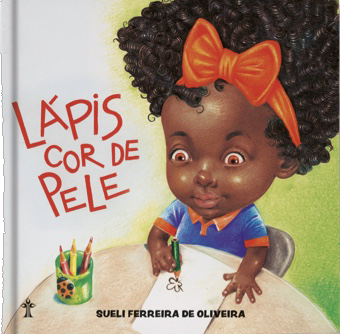

Diferentes cores
por Júlia Eduarda e Gabriela Minatell
As cores, são importantes em diversos aspectos como por exemplo para pintar e desenhar, elas foram criadas para dar brilho e alegria a momentos. A mesma é tão perfeita, que nós seres humanos temos cores mas não é o típico branco, preto, pardo e amarelo, nós estamos cores de pele como marrom bombom, tem pessoas que tem cor de chocolate, existem aquelas também, que quando envergonhadas ficam com uma cor rosada parecendo um morango. E para demonstrar com cores e desenhos se tem um livro chamado “Lápis de cor de Pele” da autora Sueli Ferreira de Oliveira. O livro foi criado com um objetivo de ensinar, para as crianças menores de que não existe só aquela cor de pele que tanto se ouve que é o famoso salmão, que nós por meio de um padrão popular colocamos em um lápis de cor um estereótipo racial, onde o cor de pele que muitos conhecem é um rosa claro que se caracteriza por ser a cor utilizada para pintar pessoas de cor de pele branca. O principal ensinamento por trás do livro é deixar uma reflexão, para pais e mães que acabam criando seus filhos baseando-se nesse estereótipo de que o lápis de cor é só o rosa claro, e um ensinamento para as crianças de que a nossa pele, a pele humana ela pode ter diversas cores desde o café com leite, até a cor de chocolate, cor de mel ou até mesmo a cor daquele chocolate meio amargo que ele é tão escuro que ele brilha.
